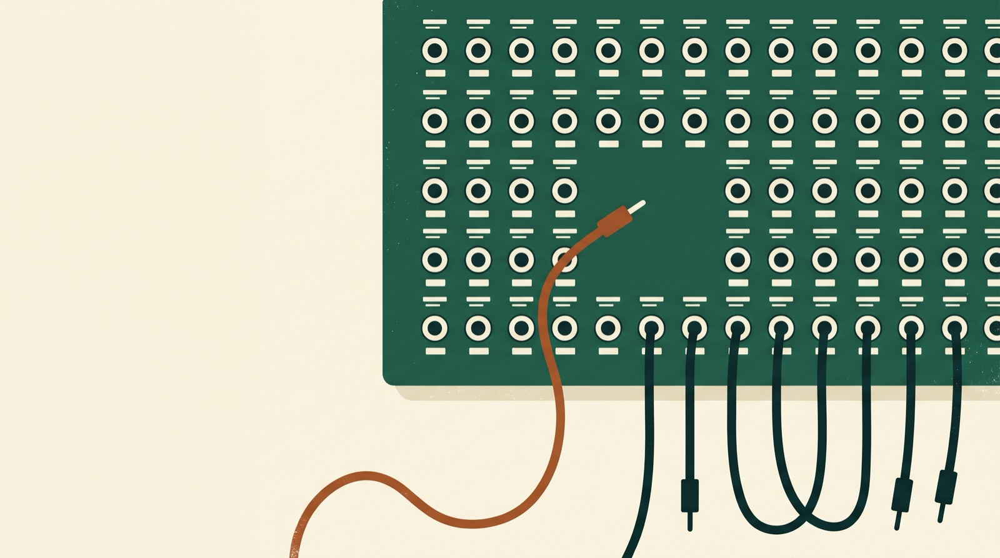

Fixing hallucinated tool calls
A made-up billing incident, the checks that explain it, and a sandbox where you can break the call yourself.
By Jared Chapman · November 12, 2026
Read this first. The incident is invented for teaching. The customer, the account, and the tool names are made up. The sandbox runs in your browser and never calls an AI model. The failure itself is one that any app that lets a model call tools can hit.
1. The log that stayed empty
After this section you can say what a hallucinated tool call is and why it leaves no trace downstream.
A customer asks, “Show me the last 30 days of billing for CUST-12345.” A moment later the agent reports an error. You open the billing service logs. Nothing. No request, no error, no trace.
Here is why. A tool is a function your code offers to the model: a name, a description, and a list of arguments. The model never runs it. The model writes a proposal, a short piece of JSON that says which tool it wants and with what values. Your code decides whether to run it. The part of your code that makes that decision is the dispatcher.
In this turn your app offered one tool, query_customer_db. The model asked for search_database. No such tool exists. The dispatcher looked up the name, found no handler, and stopped. The billing service was never called, so it had nothing to log.
That is a hallucinated tool call: a proposal for a tool you never offered.
You already know this rule from code. If you use a variable, it has to exist. Use one you never defined and Python stops with a NameError the moment it reaches that line. Tools follow the same rule. If the model calls a tool, that tool has to exist. The difference is who checks. In your code, the interpreter checks for you. With tools, nothing checks unless your dispatcher does.
Takeaway: An empty log downstream means the call died upstream. Open the dispatcher first.
2. Compare three things before you touch the prompt
After this section you can tell a model mistake from a deployment mistake.
Pull three things from that one turn.
- The tool definitions the model received.
- The name the model returned.
- The handlers registered for that user.
Here, the first and the third agree. Only the second differs. The model made the name up.
If the offered name were missing from the registry, you would see the same lookup error for a different reason. That is a deployment problem, and no prompt change fixes it. Build the tool list and the dispatch table from one registry and the two cannot drift apart.
Then look at what the model had to go on. The description said “Gets customer information.” Three words. It does not say which customer, by what key, or whether billing is included. A model left to guess reaches for whatever sounds right, and search_database sounds right.
The revised description says the tool retrieves one account by a known customer ID and can include thirty days of billing. The dispatcher also learns to return an unknown-tool error when a name is missing, so a bad guess ends in a useful response instead of an unhandled exception.
Inspect the original definition
Inspect the revised contract
Takeaway: Fix the contract before the prompt. One registry, one clear description, one error for unknown names.
3. The right tool, the wrong value
After this section you can explain why valid JSON can still be a bad call.
On the next run the model picks the right tool. Now look at the billing flag. Both lines below are valid JSON. Only one is the type the handler expects.
The original schema had a second gap. It accepted an empty object. Declaring a property only describes its value when the property is present. It does not make the property required. The revised schema adds three things.
required makes a missing field an error.pattern checks the shape of the customer ID.additionalProperties: false rejects misspelled and unexpected keys.
The JSON Schema object reference covers each of these keywords.
Use schema-constrained generation where your provider supports the keywords you need. Then check again at the edge of your own app, in this order: parse the arguments once, validate them against the registered tool’s schema, and check that the caller may see that account and its billing. A correctly formatted ID can still belong to someone else.
Takeaway: Valid JSON is the lowest bar. Check the type, check the shape, then check who is asking.
4. Tell the model what went wrong
After this section you can write an error the model can act on, and decide when to stop retrying.
Return a short error as a tool result tied to the original call ID. Keep the assistant’s call in the conversation. For the quoted billing flag, the feedback can be this small:
{"code":"invalid_argument","field":"include_billing",
"message":"Expected a JSON boolean (true or false, no quotes). Received the string \"true\"."}
The message says what the validator saw. It does not say which value to send. The dispatcher knows the schema. It does not know what the customer asked for. The model does.
Three rules for the retry.
- Give the model the same tools, and validate the new proposal from the beginning.
- If it fails a second time, stop and report the field that is still wrong.
- If the user never gave an ID and there is no trusted account context, ask for it. A made-up ID that passes the pattern would hide the real problem.
What if a valid call still fails?
An access denial ends the lookup. A database timeout belongs to the service’s timeout and retry policy. For an operation that changes state, a timeout can mean the change already happened. Check its outcome or use an idempotency key before you replay it. Send the model a sanitized outcome and keep internal exceptions in your application logs.
Takeaway: Report what you saw, let the model choose the fix, and stop after one retry.
Break it yourself
This sandbox replays the billing request against a simulated account. The editor starts with the quoted boolean from section 3.
- Select Run call and read the trace under the button.
- In the editor, change
"true" to true. Run it again and check the handler count. - Choose Unknown tool from the menu to see where the very first call stopped.
Ready to run.
5. Find where it stopped
After this section you can read a trace and name the stage that failed.
With the revised contract in place, replay the proposal. The trace now says how far it got.
Attempt 1 · query_customer_db
{"customer_id":"CUST-12345","include_billing":"true"}
JSON parsing passed
Tool lookup passed
Schema check failed at /include_billing
Account access not reached
Handler calls 0
Why did JSON parsing pass?
Both "true" and true are legal JSON. The quotes tell the parser to produce a string. The validator compares that string with the boolean the schema declares and rejects the call. The billing service has still received zero requests, so its logs still show nothing.
Attempt 2 · query_customer_db
{"customer_id":"CUST-12345","include_billing":true}
JSON parsing passed
Tool lookup passed
Schema check passed
Account access granted
Handler calls 1
Between the two attempts the dispatcher sent back the error from section 4. The model removed the quotes and kept the customer ID. You can reproduce both runs in the sandbox: choose Quoted boolean, run it, then edit that one value.
Check yourself · What if the model sends false instead?
The schema accepts false, and the handler returns the account with no billing. Every check passes. The customer still did not get what they asked for. To catch this in an evaluation, assert that the response contains the billing history. A call that passes validation is not the same as a correct answer.
Takeaway: A trace that names the stage tells you which code to open.
6. Keep it fixed
After this section you can turn the incident into a test that fails if it comes back.
Replay each proposal through your real dispatcher, with a test handler that counts how many times it runs.
Replayed proposal Handler calls
Unknown tool name 0
Missing customer ID 0
Quoted boolean 0
Valid call, authorized user 1
Valid call, access denied 0
Two invalid proposals in a row 0, loop stops
Then log five fields for every call: the tool name, the schema version, the stage that failed, the error code, and how the retry ended. Those five let you tell a stale deployment from a repeating model mistake, and none of them is customer billing data.
Takeaway: Count handler calls. Zero when the call is wrong, one when it is right, never two.
7. The one question to ask first
The empty billing log was the first clue. The code that writes that log never ran. search_database stopped at tool lookup. "true" got one stage further and stopped at the schema check. Once the name, the arguments, and the access check all matched, the lookup ran once.
The next time an agent reports a tool error, ask this before anything else.
What was the last step that succeeded?
Compare the proposal at that step with the contract your code enforces. That is where the fix goes. Then replay the customer’s original request and look at what they received. Here, done means they can see the thirty days of billing they asked for.